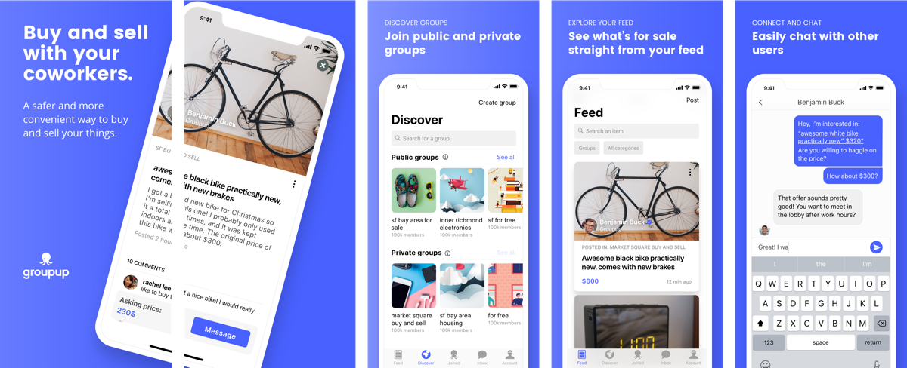
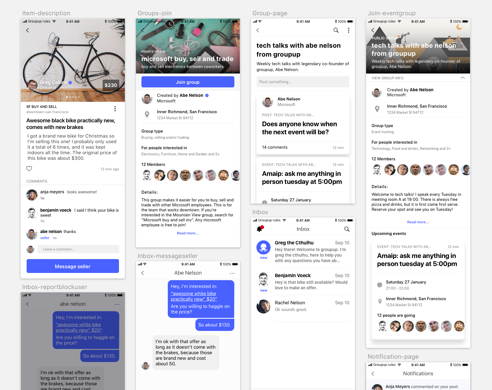
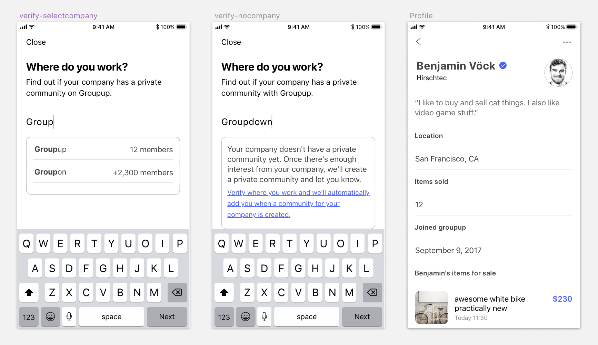
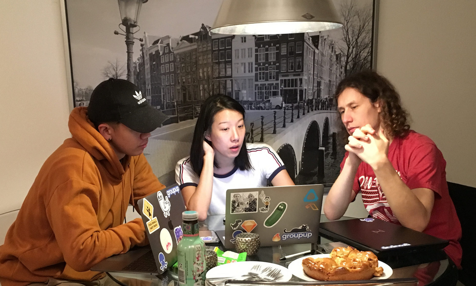

Hello 👋🏻 I'm Rachel and I'm a...
Lead Product DesignerManager
The product
We created an P2P marketplace platform for large, established companies in the Bay Area. The idea came from our co-founder, who was working at Facebook HQ at the time. Being such a large company, Facebook has an internal listings feature that allowed their employees to connect with each other outside of work. One of the most popular posts involved buying/selling used belongings. After some research, we realized a lot of companies could benefit from this.
We started Groupup Tech in late 2016, and launched the first version of the iOS app after 4 months of iterations. We also had the honor to meet with product representatives from Product Co-op, and they gave us a few suggestions to get us going.
Some key features
Exclusivity: Initially, all users could only create an account through a verified corporate email (i.e., rachel@groupup.io, rachel@microsoft.com, rachel@google.com). In order to be verified, the company had to meet these minimum criteria:
- At least more than 200 employees
- Located in the Bay Area
- A tech company (We started with Microsoft and Twitter): We wanted to make sure we went after a specific demographic as they tend to have shared interests.
However, after launch, we struggled to maintain activity on our platform because there simply wasn't enough options for buying and selling. So our next release opened the platform to the general public, and we created an internal verification process to maintain integrity.
Public and Private Groups: Groups could be created by any user, and were grouped by categories. The primary difference between private and public groups were accessibility. Private groups were company-specific and therefore would not appear to anyone who wasn't a verified employee. Public groups could be joined by anyone, regardless of which company they worked for. The feature essentially covered:
- The ability to create categorized groups
- The ability to search and join groups
- The ability to view joined groups
What seperated us from the competitors?
Established trust: We wanted to eliminate the "shadiness" of buying and selling used things with strangers. Being able to connect people to verified users of a well-known company made it easy for people to trust the exchange wasn't a scam.
Convenience of trade: We started building communities that were in the same building. A lot of well-known Bay Area companies shared the same corporate space, and creating those public groups allowed people to exchange items before/after work, or during lunch on location.
Unique features: We made it easy for people to post things to buy/sell/trade within groups. Public groups are very popular in social environments, but we saw they either lacked the proper features for buying and selling, or did not execute them well.
Discovering a niche market
Our product wasn't wildly popular at launch, but we did manage to maintain some active users. As it turns out, our most consistent category was a small community focused on buying and selling plants. Over time, the public feed was only filled with plants! So naturally, we had to look into it.
The community was thriving, and we ran with it. We listened to our users, conducted tests, then released features that addressed their pain points. We also decided to launch a campaign on instagram that directly targeted these plant lovers:

So, why did it fail?
The short answer is this: as a team, we couldn't make the right sacrifices for this product. We were a team of three passionate people that spent every second of our spare time on this product; weeknights, weekends and holidays! But we still kept our cushy full-time jobs because we needed the paychecks to sustain ourselves.
The product itself did not profit at all, so to keep everything running, we also paid out of our own pockets. We had plans to turn it into something profitable, but that milestone was far into the future. We wanted to hit critical mass first, but we made the wrong assumption that it would be easy. Turns out critical mass at an exponential scale is expensive, and even though marketing was something we were completely capable of, we just couldn't afford it.
Eventually we had a point where life just got in the way. Our Head of Development had a baby, so we put our product development on hold. After a few months of hiatus, we realized we didn't want to go through the hassle of replacing him, and collectively decided to stop production and just move on.
The Groupup.io team in Amsterdam, 2018.
What we did wrong
- No funding: We didn't seek out any potential investors soon enough. With funding, we may have hit critical mass sooner and address a lot of problems we ran into in the beginning.
- Not enough commitment: We all worked external jobs and could not commit to Groupup full-time.
- Entered a competitive market: Our primary competitors were big: Craiglist, LetGo, Facebook Groups. Regardless of our product having better features, their giant market ensured that a user could find whatever they needed.
- Weak traction: Onboarding a sustainable amount of users was challenging, especially going against strong competitors. Simply put, if our platform didn't offer items that a user was looking for, they would stop looking.
- Demographic was too broad: We may have had some growth and traction if we figured out going after a niche market would stick better. It cost us development efforts, and the timing clashed with other priorities.
What we did right
- We incorporated as soon as possible: Once we were incorporated, everything started to feel real very quickly. It wasn't a side project anymore!
- We hired a good lawyer: Our connections allowed us to work with a well-known private law firm in Silicon Valley that helped us take all the necessary legal steps to launching a marketplace application. Our lawyer made sure we were protected before launch, and took care to avoid any future liabilities.
- We treated the product like a business from the start: It was just three of us, but we took our agile process very seriously and documented everything properly.
- We maintained professional connections: Every week we connected with professionals in the market and showed them our developing product to seek their feedback and advice.
- We had a fantastic team dynamic: We completely trusted each other and every discussion and opinion was handled with the utmost respect. Even though the company was established in San Francisco, we were also a completely remote team. Two of us were in Berlin, and one was in San Francisco.
- We always put our users first: Before establishing the company, we swore to release a product made out of love first, and not profit. For example, we could have had the option to display ads in our product to generate some money, but who likes ads? Nobody. So we decided against it.
If you have any questions about other areas regarding Groupup.io, feel free to ask me. I left out a lot of details because I think the product still has potential, but I'm happy to share process with anyone interested!
Back to the homepageWant to get in touch?
- I currently live in Berlin.
- ph: +49 171 344 6056
- e: mew.aelu@gmail.com